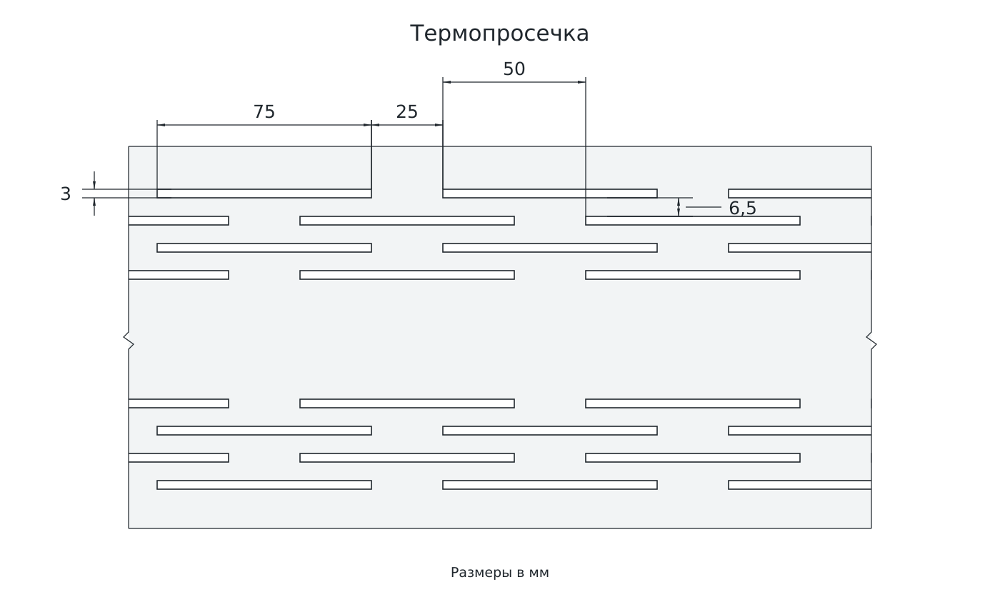
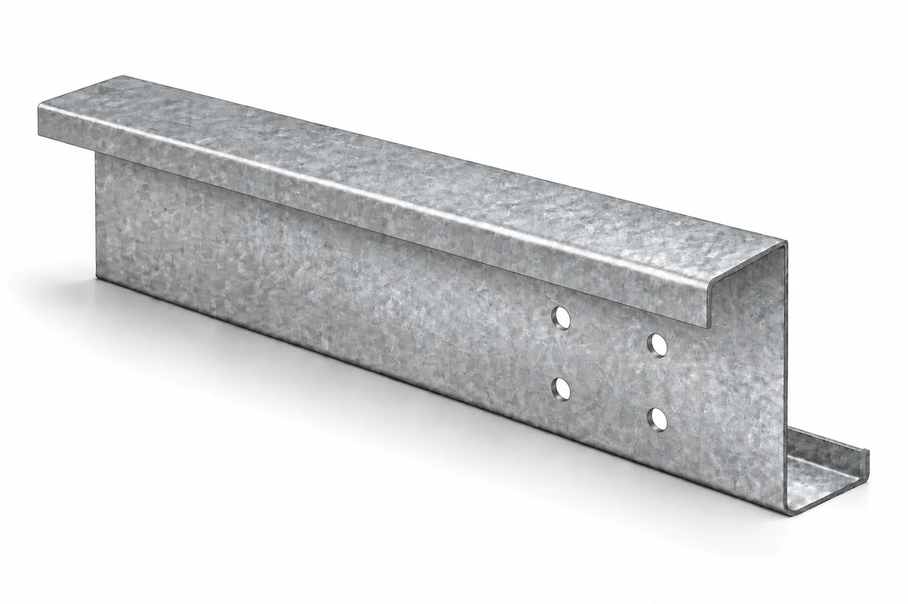

Термопросечка
Система продольных прорезей в стенке термопрофиля для увеличения пути теплового потока.

ТПП · ТПГС · ТПZНа схеме — фрагмент стенки ТПП по ТУ
Стандартные сечения и изготовление по вашим чертежам. Профиль, длина и отверстия — под задачу вашего проекта.

Сравните форму и назначение. Добавьте нужные позиции в одну заявку или сразу приложите спецификацию.
Визуализация. Размеры и расположение отверстий — по заказу.
Встречные полки разной ширины позволяют организовать соединение прогонов внахлёст. Размеры узла и отверстия задаются проектом.
Диапазоны относятся к сортаменту. Совместимость размеров уточняется при подборе.
| H, мм | B₁, мм | B₂, мм | C₁ = C₂, мм | t, мм | Выбор |
|---|---|---|---|---|---|
| 100 | 40–60 | 40–54 | 16–20 | 1–2,5 | |
| 100 | 65–80 | 57–72 | 18–27 | 1,5–3 | |
| 120 | 40–60 | 40–54 | 16–20 | 1–2,5 | |
| 120 | 65–80 | 57–72 | 18–27 | 1,5–3 | |
| 140–150 | 40–60 | 40–54 | 16–20 | 1–2,5 | |
| 140 | 65–80 | 57–72 | 18–25 | 1,5–3 | |
| 150 | 60–80 | 52–72 | 18–25 | 1,5–3 | |
| 160 | 70–80 | 67–72 | 18–25 | 1,5–3 | |
| 180 | 70–80 | 67–72 | 18–25 | 1,5–3 | |
| 200 | 70–80 | 67–72 | 18–25 | 1,5–3 | |
| 220 | 70–80 | 67–72 | 18–25 | 1,5–3 | |
| 240 | 80–90 | 72–82 | 18–27 | 1,5–3 | |
| 250 | 80–90 | 72–82 | 18–27 | 1,5–3 | |
| 260 | 80–100 | 72–92 | 20–27 | 2–3 | |
| 280 | 80–100 | 72–92 | 20–27 | 2–3 | |
| 300 | 90–100 | 82–95 | 22–27 | 2–3 | |
| 320 | 100 | 92–95 | 22–27 | 2–3 | |
| 340 | 100 | 92–95 | 22–27 | 2–3 | |
| 350 | 100 | 92–95 | 22–27 | 2–3 |
Диапазоны из таблиц приложения А ГОСТ Р 58384–2019, отобранные в каталоге ИНСИ. Наличие строки не означает наличие на складе. Окончательное сечение согласовывается в заказе.
Геометрия, обработка и комплектность согласуются вместе — ещё до выпуска профиля.
Система продольных прорезей в стенке термопрофиля для увеличения пути теплового потока.

Пробивка под крепёж по согласованной схеме. Для монтажных узлов и соединений профилей.
Пришлите чертёж. Проверим возможность изготовления и уточним параметры заказа.
Размеры сечений, обозначения и документы на продукцию — для подбора и согласования.
Выбранные профили, спецификацию или описание задачи. На старте достаточно того, что уже известно.
Сечение, металл, длину и пробивку. Фиксируем стоимость, срок производства и условия поставки.
Выпускаем согласованные профили и комплектуем поставку с документами на продукцию.
Расскажите, что нужно. Соберите запрос из выбранных позиций или приложите готовую спецификацию.
От сечения, толщины и марки стали, покрытия, длины, объёма заказа и пробивки. Пришлите спецификацию — в коммерческом предложении будут зафиксированы состав поставки, стоимость и условия.
Да. Опишите, какие профили нужны и для какого объекта. Если размеры пока неизвестны, приложите имеющиеся чертежи или перечислите исходные данные в свободной форме.
Да, можно направить чертёж нестандартного сечения. Перед заказом согласовываются размеры, радиусы, металл и возможность изготовления на оборудовании.
Приложите схему соединения с диаметрами и координатами отверстий. Длину нахлёста, количество крепежа и расстояния до кромок определяет проектировщик по расчёту узла.
Нет. Термопросечка — система узких прорезей в стенке термопрофиля. Круглые монтажные отверстия предназначены для крепежа и задаются отдельно.
Укажите город, объём и желаемую дату поставки. Срок изготовления и условия доставки подтверждаются при согласовании заказа.
{kind=link}